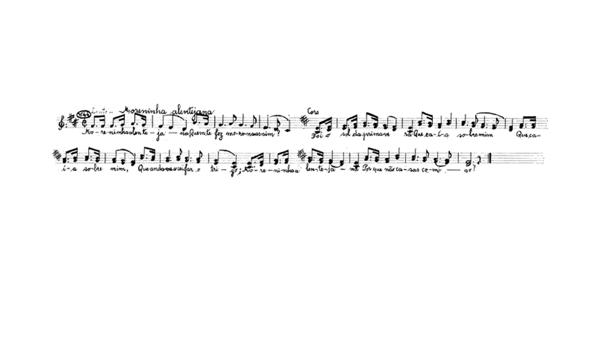
DEFINIÇÃO
O Cante Alentejano é usualmente definido pela estrutura melódica e o tipo de organização performativa que o caracteriza,
ou seja, o canto polifónico executado em grupo e sem instrumentos. Divididos entre o Ponto, o Alto e as Segundas Vozes, um grupo de cante alentejano tem como
repertório as "modas" que versam, entre outros temas, sobre o trabalho, o amor, a contemplação e a nostalgia. Outras caraterísticas que o distinguem são:
a lentidão, a moderação das acentuações, os melismas e certas anomalias harmónicas.
O Templo
A taberna é o lugar onde os homens se juntam para conviver e cantar. Vedado às mulheres durante décadas hoje já não é tão rígido. É mais uma questão de gosto. A taberna continua a ser um "clube para homens" mas a mulher é bem vinda.
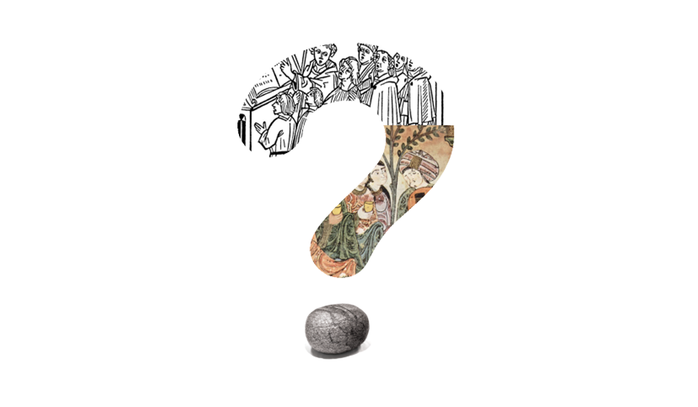
ORIGENS
As origens do Cante perdem-se no tempo.
No entanto, existem três teorias principais:
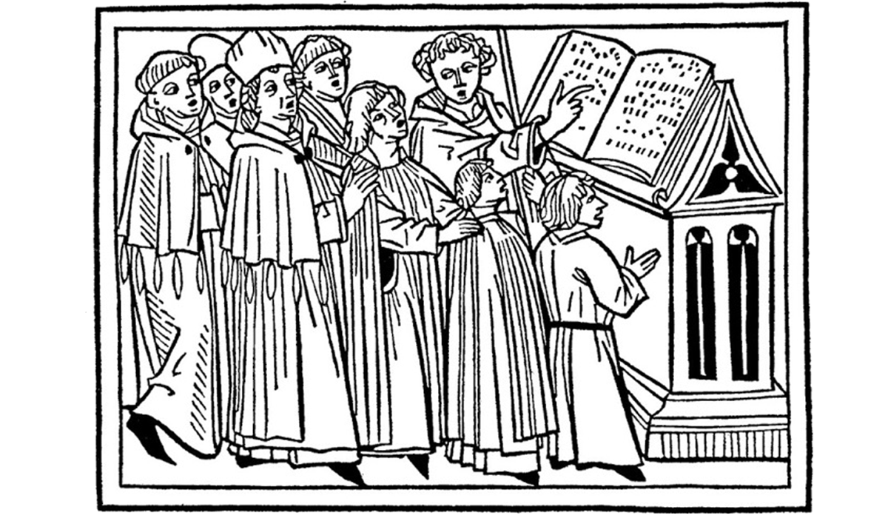
CANTO GREGORIANO
Na imagem: CORO MEDIEVAL, 1479. Xilogravura 'Der Spiegel des Menschlichen lebens,' Augsburg, Alemanha, 1479.
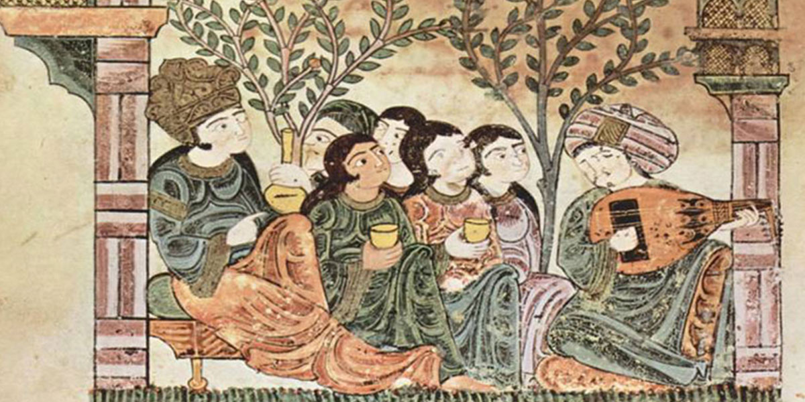
INFLUÊNCIA MUÇULMANA
O legado cultural da presença muçulmana em Portugal
Na imagem: Manuscritos Magrebinos / A História de bayad e Ryad / Bayad canta com alaúde diante da amada e dos seus servos / Séc. 13 / 17.5 × 19.2 cm / Biblioteca Apostólica do Vaticano
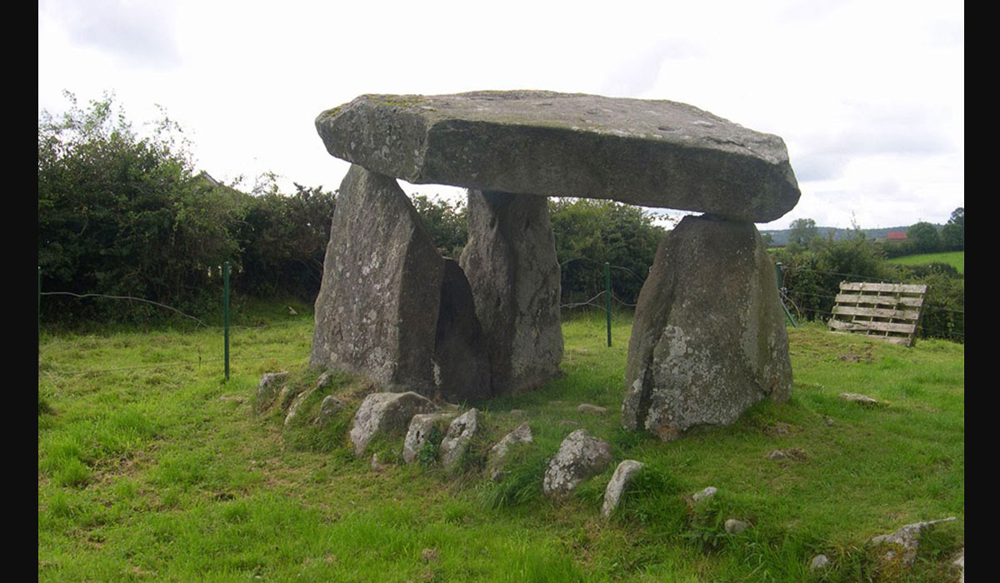
AUTOCTONE
Originalmente portuguesa e alentejana. Anterior à ocupação romana e muçulmana.
Na imagem: Dolmen
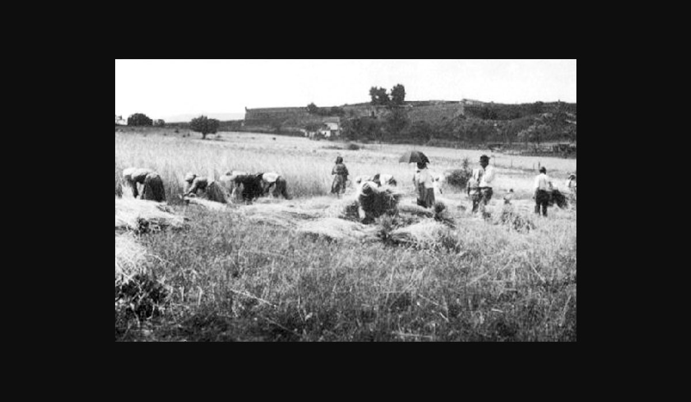
RITMO
O cante alentejano era uma manifestação informal, espontânea que acontecia no campo.
Marca um movimento lento, o ritmo, a cadência do trabalho à jorna, nomeadamente das colheitas que mais caracterizavam a
agricultura alentejana - a ceifa, a monda e a apanha de azeitona.
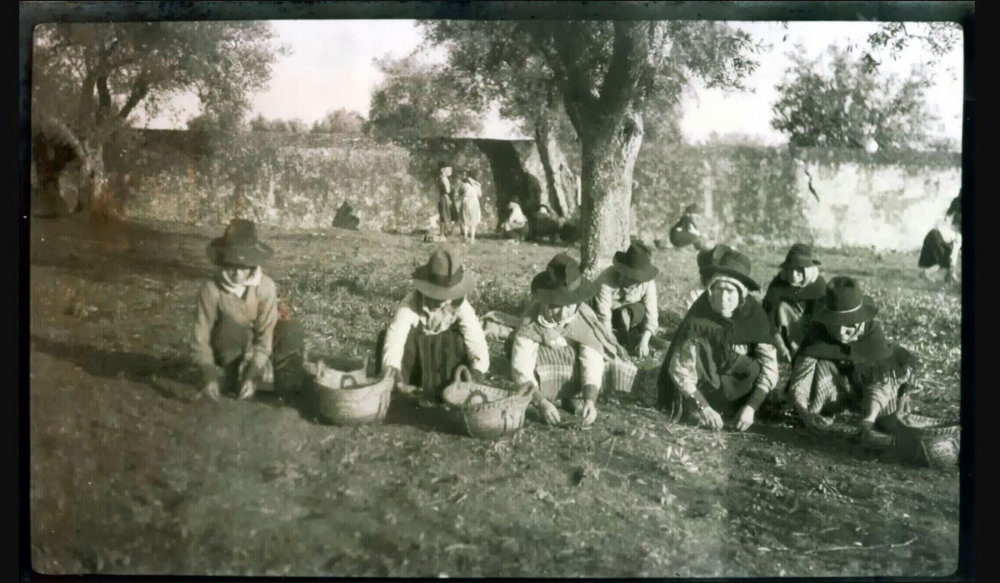
ESTÍMULO
Com o cante estimulava-se a competição entre trabalhadores,
o cante colectivo projectado em uníssono dava o mote para homens, mulheres e crianças darem o seu
melhor nas tarefas agrícolas. Entretanto, com o advento das empreitadas agrícolas, alteram-se os
ritmos de trabalho e o estimulo do cante deixou de ter a importância que tinha nas tarefas do campo.
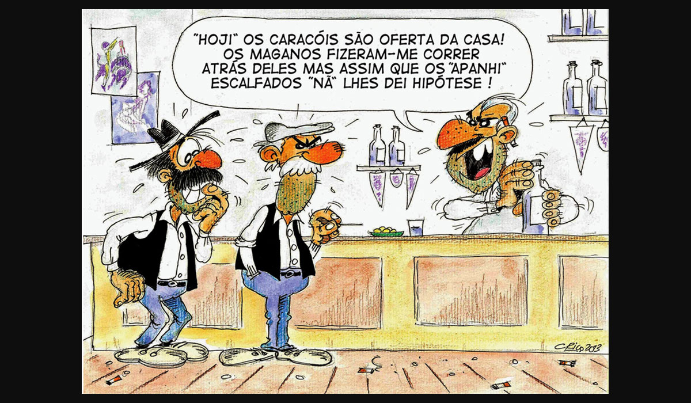
ANEDOTAS
Os alentejanos são os escolhidos para as melhores anedotas - normalmente relacionados com o ritmo lento.
AS MULHERES
É vinculada a ideia de que o cante alentejano é uma prática masculina.
Na sua origem o cante alentejano era prática não só dos homens como das mulheres, ambos trabalhavam no campo,
ambos protagonizavam essa prática cultural. Com o declínio da economia tradicional agrícola, com a passagem do cante do campo para as tabernas e,
a partir dos anos 30, quando se constituem os primeiros grupos corais formais, silenciam-se as mulheres que até então desempenhavam um papel tão
importante como os homens no cante alentejano.
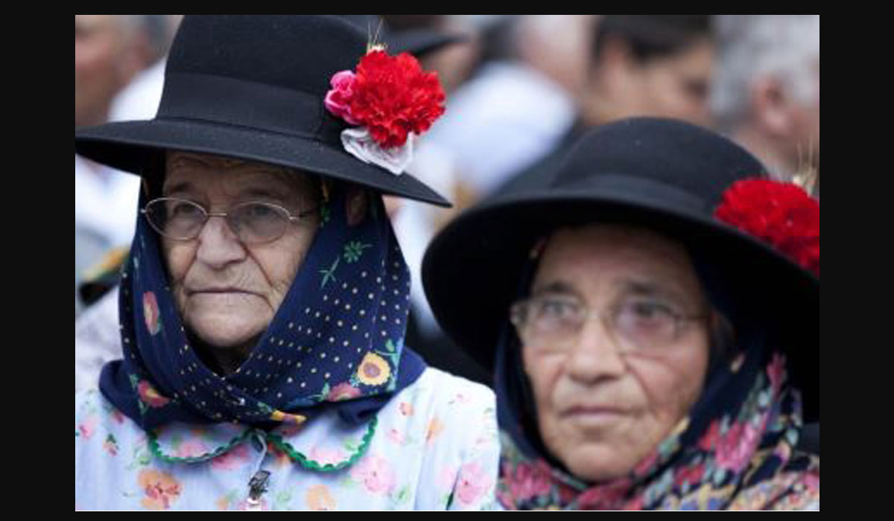
Quando as mulheres deixam de ter
acesso ao local onde, de modo privilegiado, o cante passa a acontecer – nas tabernas – estas ficam privadas do seu papel de intérpretes. Só depois
de 1974, com a revolução de Abril, com os novos movimentos sociais e culturais, as mulheres voltaram a cantar organizando-se em grupos corais femininos ou mistos .
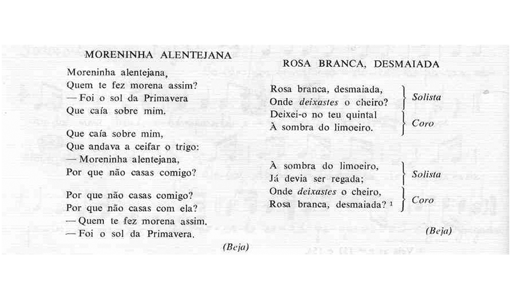
OS TEMAS
Na sua forma original, AS MODAS tinham como temas principais O TRABALHO, A CONTEMPLAÇÃO, A NOSTALGIA, O AMOR e A VIDA.
Mais do que reivindicar melhores formas de vida, o cante servia para se purgarem as dificuldades. Com o declínio da economia agrícola e depois da revolução de
1974, os grupos corais introduziram nos seus reportórios novos temas, alguns inspirados nos acontecimentos políticos da época, mais reivindicativos, não deixando,
porém, de cantar as antigas modas do cancioneiro popular.
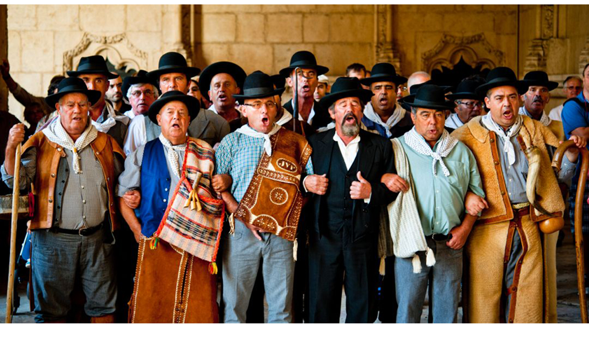
A DIÁSPORA
De salientar a existência de vários grupos corais na cintura de Lisboa, situação que advém da diáspora, os alentejanos
que saem dos seus locais de residência e partem à procura de novas oportunidades junto da capital, o cante viaja do campo para a urbe, do meio agrícola para
o meio industrial. Numa versão preliminar do "Inventário-catálogo dos grupos de cante alentejano", um documento de trabalho redigido por Paulo Lima, em 2012,
para a proposta de candidatura do Cante Alentejano à lista representativa do património cultural da humanidade a apresentar à UNESCO, são enumerados 250 grupos
corais, destes 140 encontram-se, actualmente, em actividade e 30 pertencem à diáspora. No mesmo documento
realça-se o aumento do número de grupos corais após 1974, grupos estes associados às Unidades Colectivas de Produção e às Autarquias Locais.
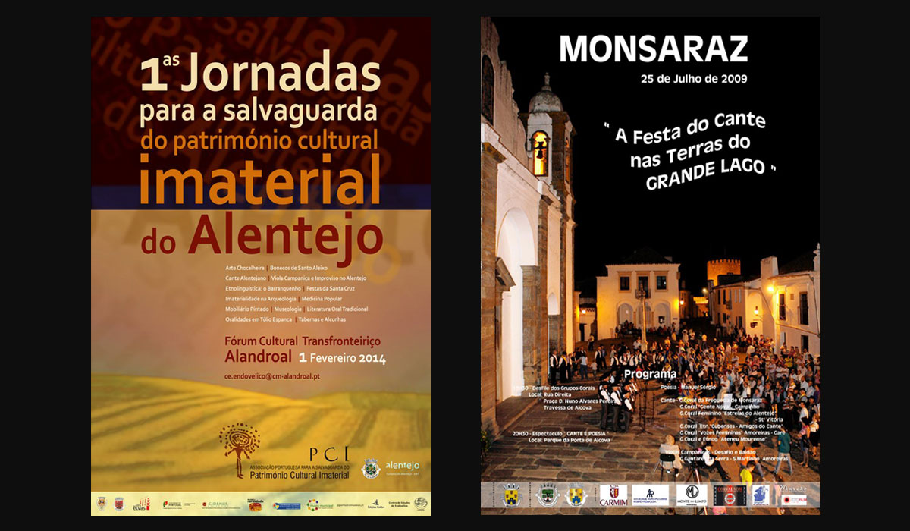
CRÉDITOS
Texto Adaptado de: Sousa, Filomena (2011), "O Cante Alentejano e os Ceifeiros de Cuba", Projecto Memóriamedia,
Porto: Memória Imaterial/IELT, artigo revisto, 2ª edição, pp. 1-12. Programação: Carlos Raposo